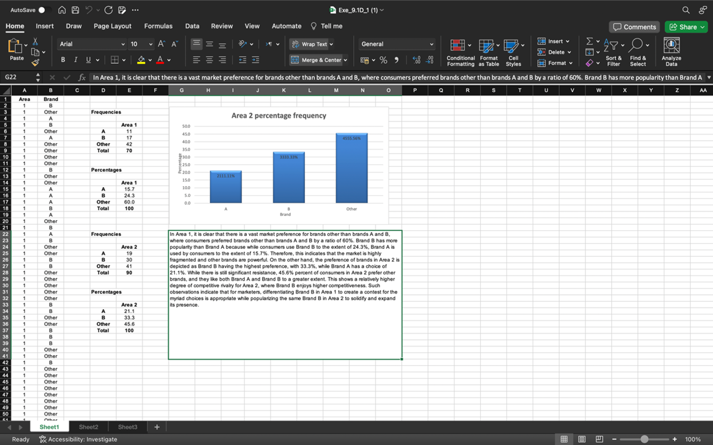
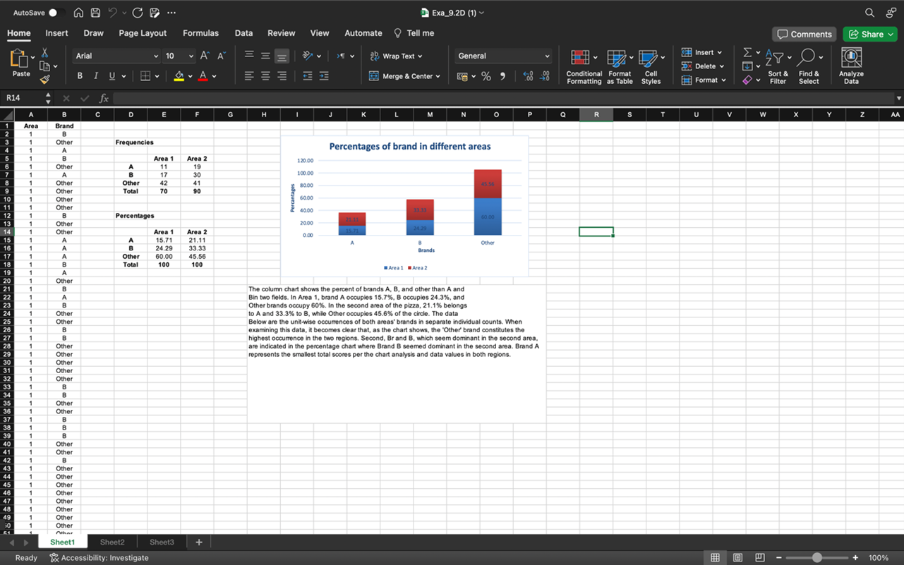
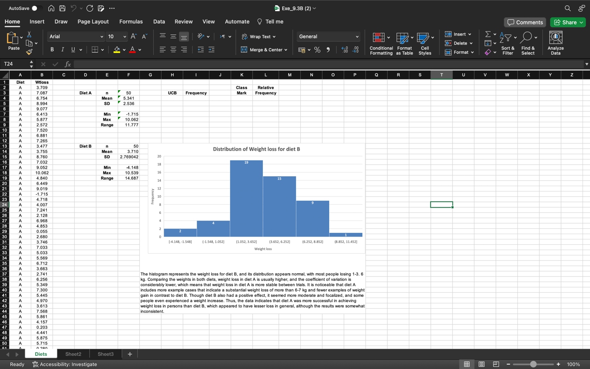

Exercise 9.1
Exercise 9.2
Exercise 9.3
References:
- Schneider, C. (2018) Making the case: A Qualitative Approach to Studying Social Media Documents in: Bryman, A. & Buchanon D. (Eds) Unconventional Methodology in Organization and Management Research. Oxford Scholarship Online.
- Saunders, M., Lewis, P. & Thornhill, A. (2023) Research Methods for Business Students. 9th ed. Pearson Education Limited.
- Chapter 11.4